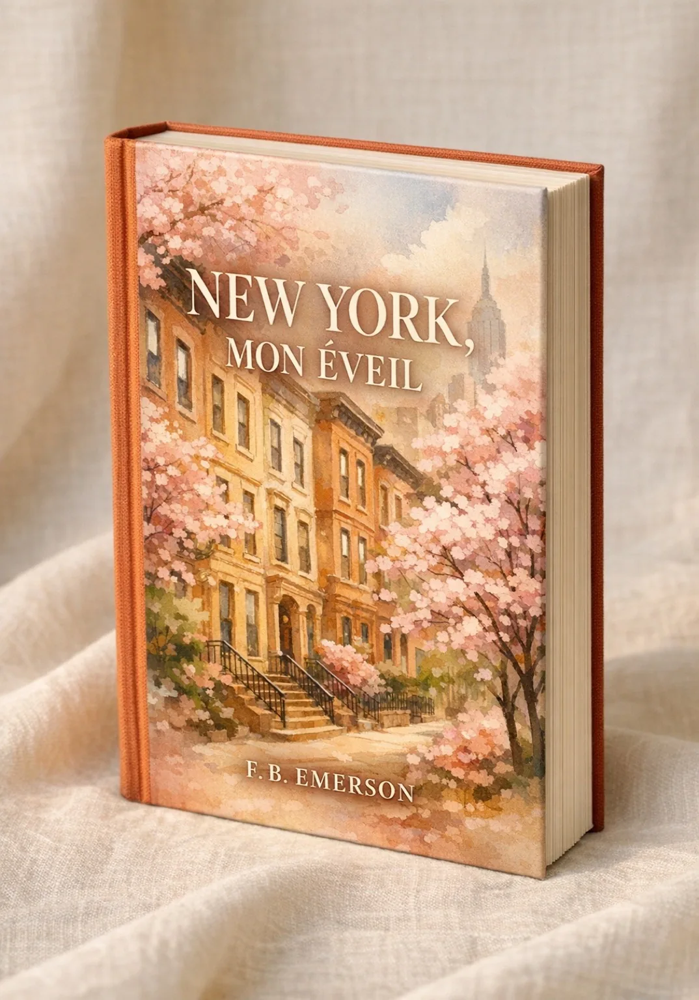

Ce livre va vous ruiner pour toutes les autres villes.
Le récit d'une transformation. Pas un guide de voyage.
Découvrir le livre
Attention
Ce n'est pas un guide. Il existe des centaines de guides sur New York. Vous n'avez pas besoin du mien.
Ceci est une confession. L'histoire de ce qui m'est arrivé quand je suis allée à New York. Ou plutôt, ce qui m'est arrivé parce que je suis allée à New York.
La distinction est importante.
Parce que je ne suis pas revenue la même.
"New York m'a gâchée. C'est le cadeau le plus cruel qu'une ville puisse faire."
F.B. Emerson
Extrait du prologue
J'ai pleuré devant un burrito.
Pas métaphoriquement. Pas une larme discrète au coin de l'œil. J'ai pleuré pour de vrai, assise à la fenêtre d'un Chipotle sur la 72e rue, avec un bol de riz et de haricots noirs devant moi, pendant que dehors New York continuait comme si de rien n'était.
Mon mari me regardait sans rien dire. Il savait. Moi, je ne savais pas encore.
C'est ridicule, je sais.
Qui pleure devant un fast-food mexicain? Qui sent sa gorge se serrer en regardant des inconnus marcher sur un trottoir? Qui a besoin de s'asseoir parce que ses jambes tremblent devant une scène aussi ordinaire?
Apparemment, moi.
Un voyage en 12 chapitres
Prologue: L'Avertissement
L'Arrivée
Les Premiers Pas
Les Sens de New York
La Faim
Les Quartiers Comme Personnages
Les Monuments Qui Parlent
L'Art de Se Perdre
La Nuit
Les Rencontres
Devenir New-Yorkais
Les Secrets
L'Après
Appendices Pratiques
Ce livre est pour vous si...
- Vous rêvez de New York depuis toujours, et vous voulez plus qu'un guide
- Vous êtes déjà allé(e) à NYC, et quelque chose vous manque depuis
- Vous croyez qu'un lieu peut changer une personne
- Vous préférez les confessions aux conseils
- Vous voulez ressentir New York avant d'y mettre les pieds
- Vous cherchez un cadeau pour quelqu'un qui part, ou qui devrait partir
Ce livre n'est PAS pour vous si...
...vous voulez juste une liste d'adresses. Pour ça, il existe d'excellents guides. Celui-ci n'en fait pas partie.
Ce qu'en disent les lecteurs
"J'ai lu ce livre dans l'avion vers NYC. J'ai pleuré trois fois. Je ne suis plus la même voyageuse."Marie L., Paris
"Ce n'est pas un guide. C'est une déclaration d'amour. Et maintenant je comprends pourquoi les gens reviennent."Sophie T., Montréal
"J'ai offert ce livre à ma sœur qui partait à New York. Elle m'appelle tous les jours depuis pour me dire que F.B. avait raison."Claire D., Bruxelles
"Les appendices pratiques m'ont sauvé la vie. Mais c'est le reste qui m'a fait comprendre pourquoi j'avais besoin d'y aller."Thomas R., Lyon
"Je l'ai lu deux fois. La première pour préparer mon voyage. La deuxième pour comprendre ce qui m'était arrivé là-bas."Aminata K., Dakar
"Enfin quelqu'un qui écrit sur New York sans mentir. C'est dur, c'est beau, c'est exactement ça."Marc B., Genève
New York, Mon Éveil
Récit de Transformation
- 12 chapitres + Prologue
- Appendices pratiques inclus
- Format: PDF premium
- Livraison instantanée par email
Moins qu'un cocktail à Manhattan. Plus qu'un guide de voyage.
Acheter le livreSatisfait ou remboursé sous 30 jours. Si ce livre ne vous fait rien ressentir, je vous rends votre argent.
Questions fréquentes
Non. C'est un récit de transformation. Il y a des appendices pratiques (restaurants, transport), mais le cœur du livre est une histoire. Celle de ce que New York peut vous faire.
Surtout pour vous. Ce livre prépare votre cœur autant que votre itinéraire.
Si New York vous a fait quelque chose, vous allez reconnaître cette expérience. Si elle ne vous a rien fait... peut-être que ce livre vous expliquera pourquoi elle devrait.
En français. C'est la langue maternelle de l'auteure.
Par email, immédiatement après l'achat. Format PDF inclus.
Remboursement intégral sous 30 jours, sans question.
Pas encore prêt(e) à acheter?
Recevez le premier chapitre gratuitement, et découvrez si ce livre est fait pour vous.
+ Vous serez informé(e) des prochains projets de F.B. Emerson
Une question sur New York?
F.B. répond personnellement aux lecteurs qui préparent leur voyage.
Pour un premier séjour, commencez par Premier voyage à New York.
Poser une question →Du Blog
Ce que les guides ne racontent pas

Les gens de New York, ceux qu'on n'oublie jamais
On vous parle des gratte-ciels, des avenues, de l'énergie. Personne ne vous prévient que ce sont les gens, des inconnus croisés le temps d'un instant, qui finiront par définir votre New York.

Écrire sur New York, la ville qui refuse d'être décrite
Chaque écrivain qui s'est attaqué à New York a buté sur le même mur. La ville change plus vite que l'encre ne sèche. Alors pourquoi continuer? Parce que c'est justement cette résistance qui rend l'exercice vital.

New York en été, la ville à ceux qui restent
On vous vante New York sous la neige ou au printemps. Personne ne vous prévient pour l'été, cette saison où la ville perd ses masques et appartient enfin à ceux qui restent.
New York vous attend.
Ce livre vous y prépare.
Pas avec des listes. Avec la vérité.
Commencer la lecture